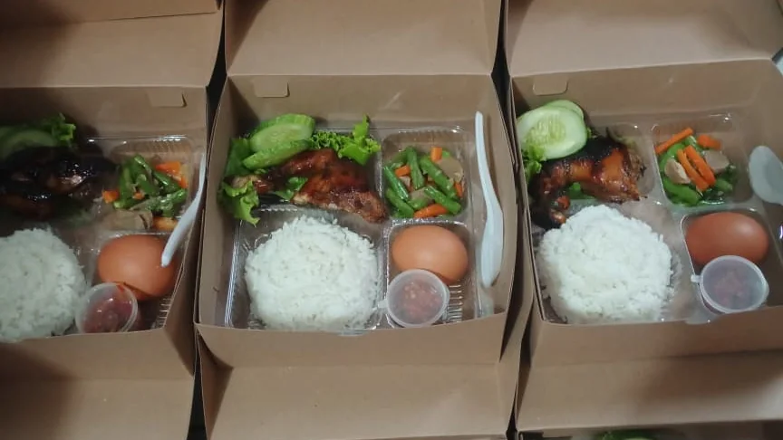
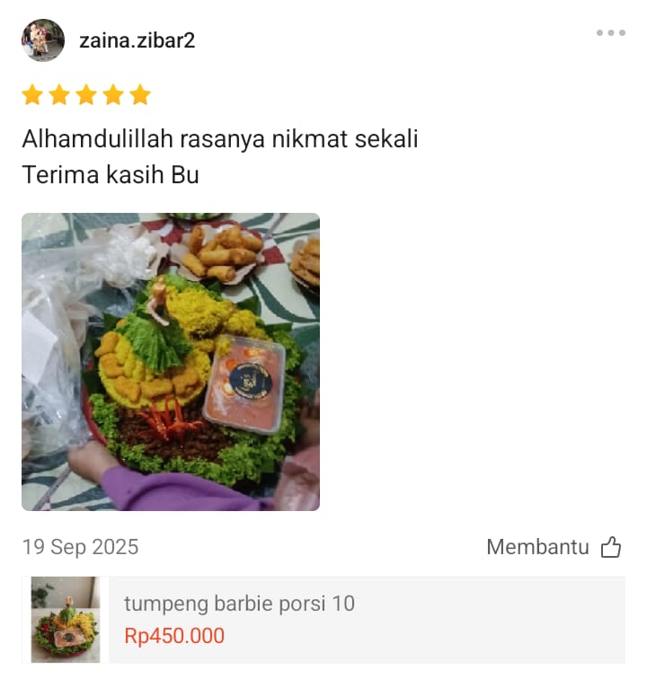
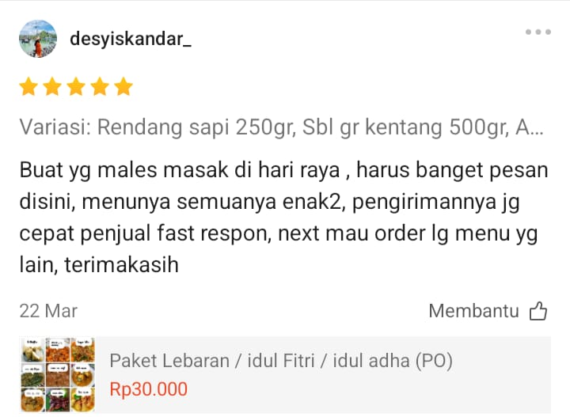
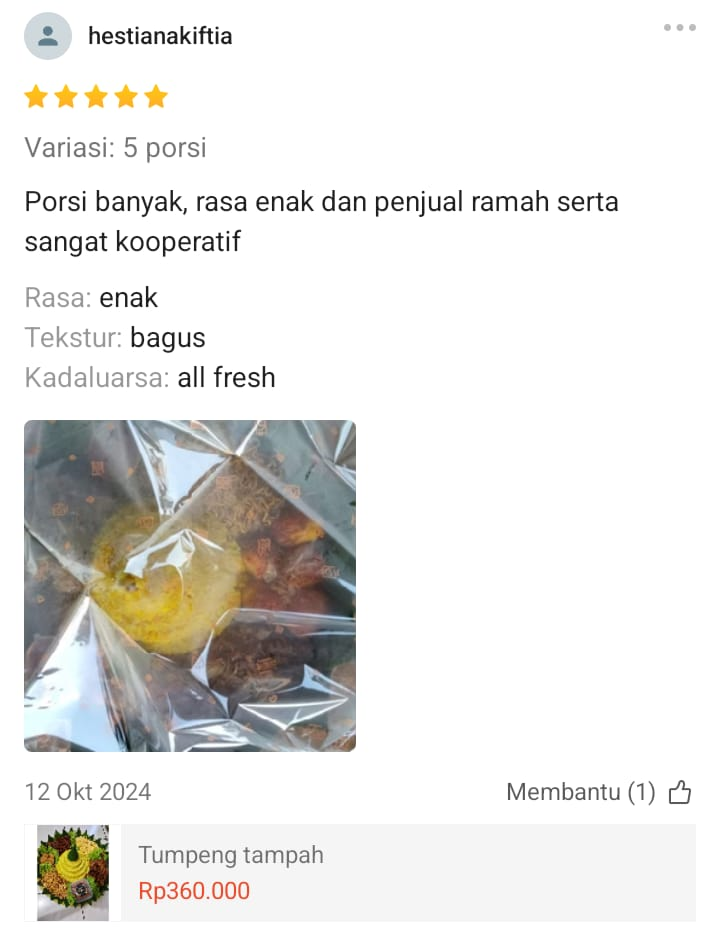
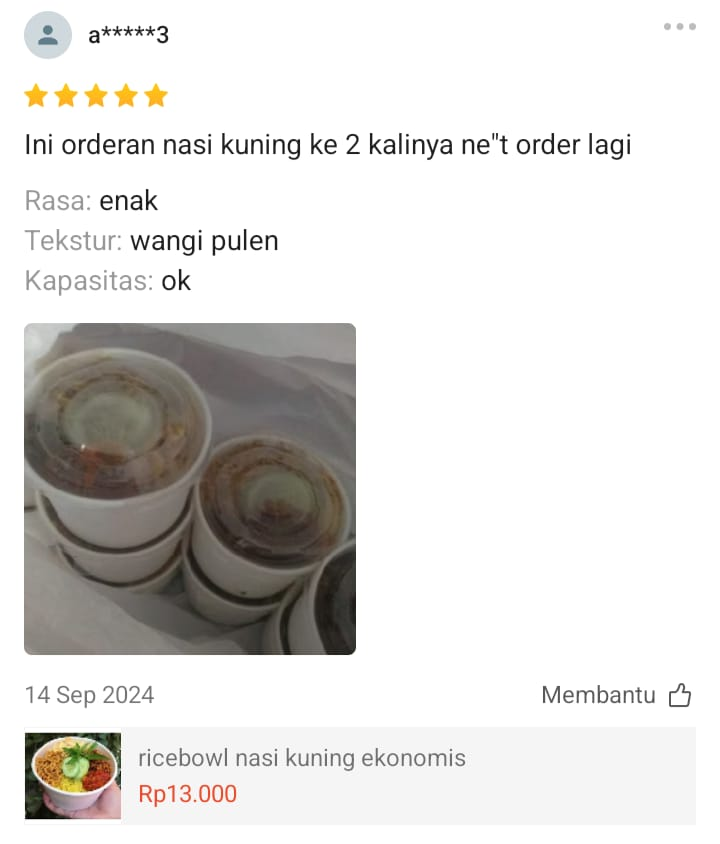
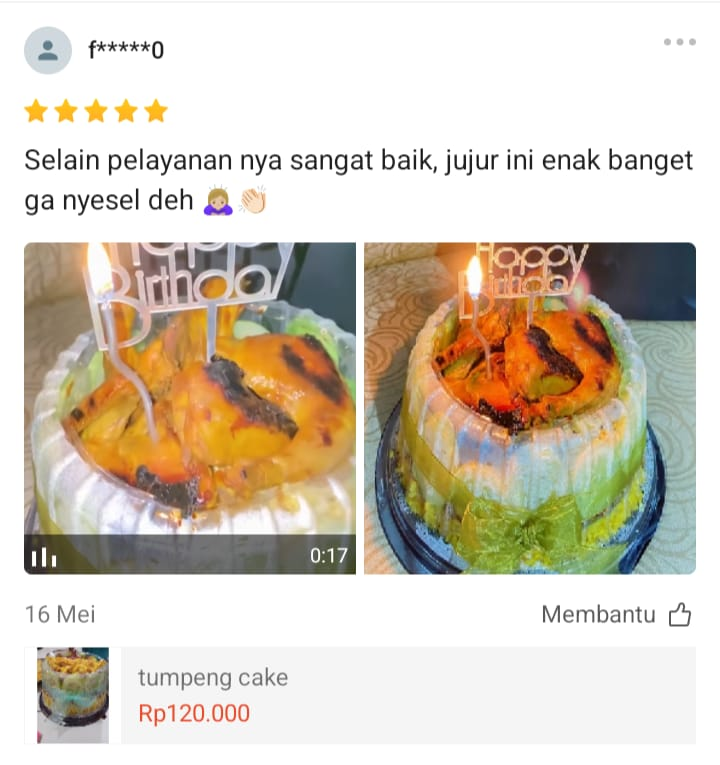
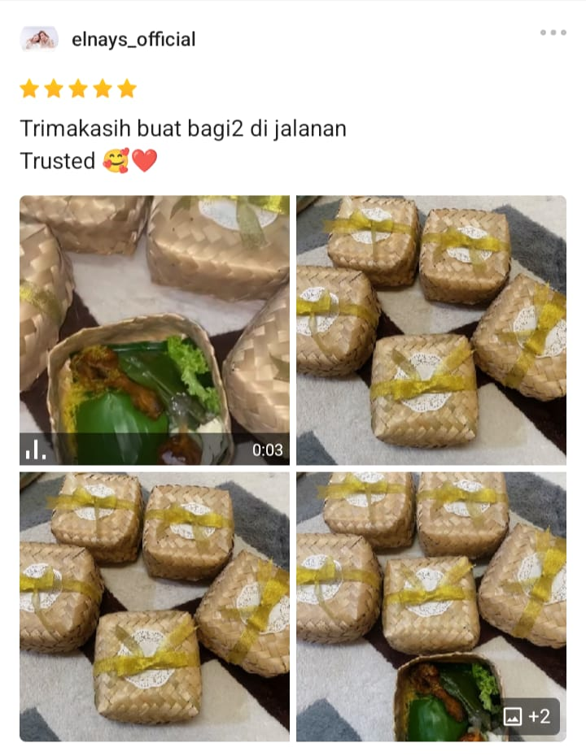
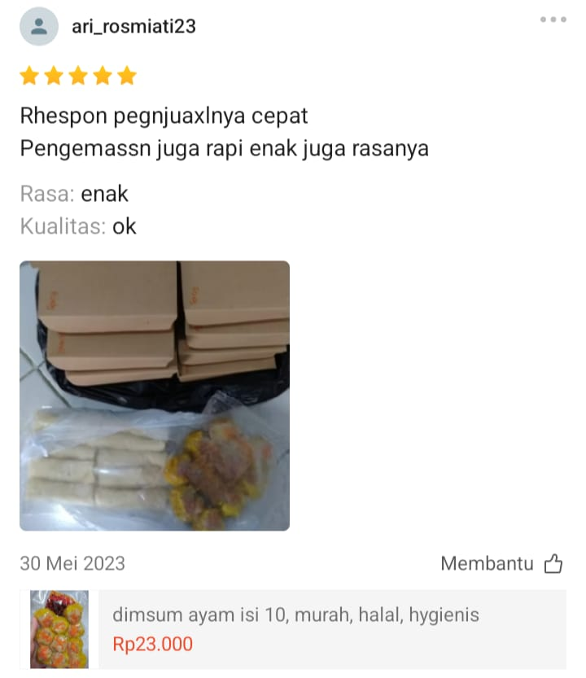

Dokumentasi Kami
Senyum puas dan hidangan lezat adalah saksi bisu dedikasi kami. Berikut beberapa momen yang telah kami layani.



Menghadirkan kelezatan masakan rumahan autentik dengan standar profesional, kami hadir untuk menyajikan hidangan lezat, segar, dan higienis untuk setiap acara Anda.
Di Lyns Catering, kami percaya bahwa makanan bukan sekadar pengisi perut, melainkan bahasa cinta yang menyatukan setiap orang. Berawal dari kecintaan meracik bumbu dan resep rahasia keluarga, kami mendedikasikan diri untuk menyajikan hidangan lezat berkualitas tinggi yang akan membuat lidah Anda menari. Dari acara kantor yang formal hingga syukuran keluarga yang hangat, kami mengurus semuanya—agar Anda bisa fokus menikmati momen bahagia.
Bukan sekadar katering biasa. Ini alasan mengapa ratusan pelanggan selalu kembali mempercayakan acaranya kepada Lyns Catering.
Dimasak oleh koki berpengalaman dengan racikan bumbu rempah asli. Rasanya pas, sedap, dan bikin nagih.
Kualitas rasa berawal dari bahan. Kami berbelanja setiap pagi untuk memastikan sayur, daging, dan bumbu 100% segar.
Semua proses masak dilakukan dengan standar higienis dan menggunakan bahan-bahan yang halal.
Kami tahu betapa pentingnya waktu di acara Anda. Pesanan dijamin tiba sebelum acara dimulai, tanpa drama.
Jangan biarkan tamu Anda kecewa dengan makanan yang biasa saja. Pesan sekarang atau pelajari menu andalan kami.
*Menu dapat disesuaikan dengan permintaan. Harga menyesuaikan pilihan menu.
Lebih suka bertransaksi lewat marketplace? Kunjungi toko resmi kami di Shopee untuk berbagai pilihan menu, promo gratis ongkir, dan sistem pembayaran yang terjamin aman.
Senyum puas dan hidangan lezat adalah saksi bisu dedikasi kami. Berikut beberapa momen yang telah kami layani.
Kepuasan Anda adalah prioritas utama kami. Berikut adalah ulasan dan komentar jujur dari pelanggan setia Lyns Catering.







Alamat Dapur Kami:
Jl. Bunisari No.29 Antapani Kota Bandung
Telepon / WhatsApp:
0812-1900-0831
Email:
lynskitchen.82@gmail.com